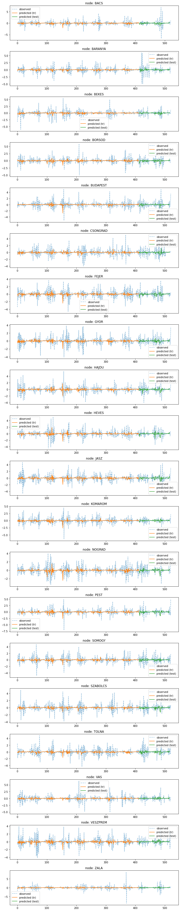

!pip install torch-geometric
!pip install torch-geometric-temporalSimulation

About this doc
- 이 문서는 공식홈페이지의 예제와 최서연학생의 블로그 내용을 재구성하여 만듬
- 이 문서의 목표는 아래와 같다.
- STGCN을 사용할 수 있는 데이터의 형태를 탐구한다.
- STGCN을 실습할 코드를 확보한다.
- 코랩에서 실습하기 위해서는 아래를 설치해야한다.
ref
- PyG 공식홈페이지 //
torch_geometric - PyTorch Geometric Temporal 공식홈페이지 //
torch_geometric_temporal - 최서연 블로그
참고: torch 를 기반으로 PyG1이 만들어 졌고 PyG를 기반으로 PyTorch Geometric Temporal2가 만들어짐.
imports
- 필요한 패키지 임포트
# 일반적인 모듈
import numpy as np
import matplotlib.pyplot as plt
import networkx as nx
from tqdm import tqdm
# 파이토치 관련
import torch
import torch.nn.functional as F
# PyG 관련
from torch_geometric.data import Data
# STGCN 관련
import torch_geometric_temporal
from torch_geometric_temporal.nn.recurrent import GConvGRU
from torch_geometric_temporal.signal import temporal_signal_split tdqm: for문의 진행상태를 확인하기 위한 패키지networkx: 그래프 시그널 시각화를 위한 모듈torch: 파이토치 (STGCN은 파이토치 기반으로 만들어짐) 모듈torch.nn.functional: relu 등의 활성화함수를 불러오기 위한 모듈Data: 그래프자료를 만들기 위한 클래스GConvGRU: STGCN layer를 만드는 클래스temporal_signal_split: STGCN dataset 을 train/test 형태로 분리하는 기능이 있는 “함수”
- STGCN의 학습을 위한 클래스선언
class RecurrentGCN(torch.nn.Module):
def __init__(self, node_features, filters):
super(RecurrentGCN, self).__init__()
self.recurrent = GConvGRU(node_features, filters, 2)
self.linear = torch.nn.Linear(filters, 1)
def forward(self, x, edge_index, edge_weight):
h = self.recurrent(x, edge_index, edge_weight)
h = F.relu(h)
h = self.linear(h)
return hnotaions ofr STGCN
- 시계열: each \(t\) 에 대한 observation이 하나의 값 (혹은 벡터)
- 자료: \(X(t)\) for \(t=1,2,\dots,T\)
- STGCN setting에서는 each \(t\) 에 대한 observation이 graph
- 자료: \(X(v,t)\) for \(t=1,2,\dots,T\) and \(v \in V\)
- 주의: 이 포스트에서는 \(X(v,t)\) 를 \(f(v,t)\) 로 표현할 때가 있음
dataset, dataloaders
PyG 의 Data 자료형
ref: https://pytorch-geometric.readthedocs.io/en/latest/notes/introduction.html#data-handling-of-graphs
- 자료는 PyG의 Data 오브젝트를 기반으로 한다.
(예제) 아래와 같은 그래프자료를 고려하자.

이러한 자료형은 아래와 같은 형식으로 저장한다.
edge_index = torch.tensor([[0, 1, 1, 2],
[1, 0, 2, 1]], dtype=torch.long)
x = torch.tensor([[-1], [0], [1]], dtype=torch.float)
data = Data(x=x, edge_index=edge_index) # Data는 그래프자료형을 만드는 클래스type(data)torch_geometric.data.data.Datadata.xtensor([[-1.],
[ 0.],
[ 1.]])data.edge_indextensor([[0, 1, 1, 2],
[1, 0, 2, 1]])PyTorch Geometric Temporal 의 자료형
아래의 클래스들중 하나를 이용하여 만든다.
## Temporal Signal Iterators
torch_geometric_temporal.signal.StaticGraphTemporalSignal
torch_geometric_temporal.signal.DynamicGraphTemporalSignal
torch_geometric_temporal.signal.DynamicGraphStaticSignal
## Heterogeneous Temporal Signal Iterators
torch_geometric_temporal.signal.StaticHeteroGraphTemporalSignal
torch_geometric_temporal.signal.DynamicHeteroGraphTemporalSignal
torch_geometric_temporal.signal.DynamicHeteroGraphStaticSignal이중 “Heterogeneous Temporal Signal” 은 우리가 관심이 있는 신호가 아니므로 사실상 아래의 3개만 고려하면 된다.
torch_geometric_temporal.signal.StaticGraphTemporalSignaltorch_geometric_temporal.signal.DynamicGraphTemporalSignaltorch_geometric_temporal.signal.DynamicGraphStaticSignal
여기에서 StaticGraphTemporalSignal 는 시간에 따라서 그래프 구조가 일정한 경우, 즉 \({\cal G}_t=\{{\cal V},{\cal E}\}\)와 같은 구조를 의미한다.
(예제1) StaticGraphTemporalSignal 를 이용하여 데이터 셋 만들기
- json data \(\to\) dict
import json
import urlliburl = "https://raw.githubusercontent.com/benedekrozemberczki/pytorch_geometric_temporal/master/dataset/chickenpox.json"
data_dict = json.loads(urllib.request.urlopen(url).read())
# data_dict 출력이 김data_dict.keys()dict_keys(['edges', 'node_ids', 'FX'])- 살펴보기
np.array(data_dict['edges']).Tarray([[ 0, 0, 0, 0, 0, 0, 0, 1, 1, 1, 1, 2, 2, 2, 2, 3,
3, 3, 3, 3, 3, 4, 4, 5, 5, 5, 5, 6, 6, 6, 6, 6,
6, 6, 7, 7, 7, 7, 8, 8, 8, 8, 8, 9, 9, 9, 9, 9,
10, 10, 10, 10, 10, 10, 10, 10, 11, 11, 11, 11, 11, 12, 12, 12,
12, 13, 13, 13, 13, 13, 13, 13, 13, 14, 14, 14, 14, 14, 14, 15,
15, 15, 16, 16, 16, 16, 16, 17, 17, 17, 17, 18, 18, 18, 18, 18,
18, 18, 19, 19, 19, 19],
[10, 6, 13, 1, 0, 5, 16, 0, 16, 1, 14, 10, 8, 2, 5, 8,
15, 12, 9, 10, 3, 4, 13, 0, 10, 2, 5, 0, 16, 6, 14, 13,
11, 18, 7, 17, 11, 18, 3, 2, 15, 8, 10, 9, 13, 3, 12, 10,
5, 9, 8, 3, 10, 2, 13, 0, 6, 11, 7, 13, 18, 3, 9, 13,
12, 13, 9, 6, 4, 12, 0, 11, 10, 18, 19, 1, 14, 6, 16, 3,
15, 8, 16, 14, 1, 0, 6, 7, 19, 17, 18, 14, 18, 17, 7, 6,
19, 11, 18, 14, 19, 17]])- \({\cal E} = \{(0,10),(0,6), \dots, (19,17)\}\)
- 혹은 \({\cal E} = \{(\tt{BACS},\tt{JASZ}), ({\tt BACS},{\tt FEJER}), \dots, (\tt{ZALA},\tt{VAS})\}\)
data_dict['node_ids']{'BACS': 0,
'BARANYA': 1,
'BEKES': 2,
'BORSOD': 3,
'BUDAPEST': 4,
'CSONGRAD': 5,
'FEJER': 6,
'GYOR': 7,
'HAJDU': 8,
'HEVES': 9,
'JASZ': 10,
'KOMAROM': 11,
'NOGRAD': 12,
'PEST': 13,
'SOMOGY': 14,
'SZABOLCS': 15,
'TOLNA': 16,
'VAS': 17,
'VESZPREM': 18,
'ZALA': 19}- \({\cal V}=\{\tt{BACS},\tt{BARANYA} \dots, \tt{ZALA}\}\)
np.array(data_dict['FX']), np.array(data_dict['FX']).shape(array([[-1.08135724e-03, -7.11136085e-01, -3.22808515e+00, ...,
1.09445310e+00, -7.08747750e-01, -1.82280792e+00],
[ 2.85705967e-02, -5.98430173e-01, -2.29097341e-01, ...,
-1.59220988e+00, -2.24597623e-01, 7.86330575e-01],
[ 3.54742090e-01, 1.90511208e-01, 1.61028185e+00, ...,
1.38183225e-01, -7.08747750e-01, -5.61724314e-01],
...,
[-4.75512620e-01, -1.19952837e+00, -3.89043358e-01, ...,
-1.00023329e+00, -1.71429032e+00, 4.70746677e-02],
[-2.08645035e-01, 6.03766218e-01, 1.08216835e-02, ...,
4.71099041e-02, 2.45684924e+00, -3.44296107e-01],
[ 1.21464875e+00, 7.16472130e-01, 1.29038982e+00, ...,
4.56939849e-01, 7.43702632e-01, 1.00375878e+00]]),
(521, 20))- \({\bf f}=\begin{bmatrix} {\bf f}_1\\ {\bf f}_2\\ \dots \\ {\bf f}_{521} \end{bmatrix}=\begin{bmatrix} f(t=1,v=\tt{BACS}) & \dots & f(t=1,v=\tt{ZALA}) \\ f(t=2,v=\tt{BACS}) & \dots & f(t=2,v=\tt{ZALA}) \\ \dots & \dots & \dots \\ f(t=521,v=\tt{BACS}) & \dots & f(t=521,v=\tt{ZALA}) \end{bmatrix}\)
즉 data_dict는 아래와 같이 구성되어 있음
| 수학 기호 | 코드에 저장된 변수 | 자료형 | 차원 | 설명 |
|---|---|---|---|---|
| \({\cal V}\) | data_dict['node_ids'] |
dict | 20 | 20개의 노드에 대한 설명이 있음 |
| \({\cal E}\) | data_dict['edges'] |
list (double list) | (102,2) | 노드들에 대한 102개의 연결을 정의함 |
| \({\bf f}\) | data_dict['node_ids'] |
dict | (521,20) | \(f(t,v)\) for \(v \in {\cal V}\) and \(t = 1,\dots, T\) |
- 주어진 자료를 정리하여 그래프신호 \(\big(\{{\cal V},{\cal E},{\bf W}\},{\bf f}\big)\)를 만들면 아래와 같다.
edges = np.array(data_dict["edges"]).T
edge_weight = np.ones(edges.shape[1])
f = np.array(data_dict["FX"])- 여기에서
edges는 \({\cal E}\)에 대한 정보를 edges_weight는 \({\bf W}\)에 대한 정보를f는 \({\bf f}\)에 대한 정보를 저장한다.
Note: 이때 \({\bf W}={\bf E}\) 로 정의한다. (하지만 꼭 이래야 하는건 아니야)
- data_dict \(\to\) dl
lags = 4
features = [f[i : i + lags, :].T for i in range(f.shape[0] - lags)]
targets = [f[i + lags, :].T for i in range(f.shape[0] - lags)]np.array(features).shape, np.array(targets).shape((517, 20, 4), (517, 20))| 설명변수 | 반응변수 |
|---|---|
| \({\bf X} = {\tt features} = \begin{bmatrix} {\bf f}_1 & {\bf f}_2 & {\bf f}_3 & {\bf f}_4 \\ {\bf f}_2 & {\bf f}_3 & {\bf f}_4 & {\bf f}_5 \\ \dots & \dots & \dots & \dots \\ {\bf f}_{517} & {\bf f}_{518} & {\bf f}_{519} & {\bf f}_{520} \end{bmatrix}\) | \({\bf y}= {\tt targets} = \begin{bmatrix} {\bf f}_5 \\ {\bf f}_6 \\ \dots \\ {\bf f}_{521} \end{bmatrix}\) |
- AR 느낌으로 표현하면 AR(4) 임
dataset = torch_geometric_temporal.signal.StaticGraphTemporalSignal(
edge_index= edges,
edge_weight = edge_weight,
features = features,
targets = targets
)dataset<torch_geometric_temporal.signal.static_graph_temporal_signal.StaticGraphTemporalSignal at 0x7f3423668bd0>- 그런데 이 과정을 아래와 같이 할 수도 있음
# PyTorch Geometric Temporal 공식홈페이지에 소개된 코드
loader = torch_geometric_temporal.dataset.ChickenpoxDatasetLoader()
dataset=loader.get_dataset(lags=4)- dataset은 dataset[0], \(\dots\) , dataset[516]과 같은 방식으로 각 시점별 자료에 접근가능
dataset[0]Data(x=[20, 4], edge_index=[2, 102], edge_attr=[102], y=[20])각 시점에 대한 자료형은 아까 살펴보았던 PyG의 Data 자료형과 같음
type(dataset[0])torch_geometric.data.data.Datadataset[0].x tensor([[-1.0814e-03, 2.8571e-02, 3.5474e-01, 2.9544e-01],
[-7.1114e-01, -5.9843e-01, 1.9051e-01, 1.0922e+00],
[-3.2281e+00, -2.2910e-01, 1.6103e+00, -1.5487e+00],
[ 6.4750e-01, -2.2117e+00, -9.6858e-01, 1.1862e+00],
[-1.7302e-01, -9.4717e-01, 1.0347e+00, -6.3751e-01],
[ 3.6345e-01, -7.5468e-01, 2.9768e-01, -1.6273e-01],
[-3.4174e+00, 1.7031e+00, -1.6434e+00, 1.7434e+00],
[-1.9641e+00, 5.5208e-01, 1.1811e+00, 6.7002e-01],
[-2.2133e+00, 3.0492e+00, -2.3839e+00, 1.8545e+00],
[-3.3141e-01, 9.5218e-01, -3.7281e-01, -8.2971e-02],
[-1.8380e+00, -5.8728e-01, -3.5514e-02, -7.2298e-02],
[-3.4669e-01, -1.9827e-01, 3.9540e-01, -2.4774e-01],
[ 1.4219e+00, -1.3266e+00, 5.2338e-01, -1.6374e-01],
[-7.7044e-01, 3.2872e-01, -1.0400e+00, 3.4945e-01],
[-7.8061e-01, -6.5022e-01, 1.4361e+00, -1.2864e-01],
[-1.0993e+00, 1.2732e-01, 5.3621e-01, 1.9023e-01],
[ 2.4583e+00, -1.7811e+00, 5.0732e-02, -9.4371e-01],
[ 1.0945e+00, -1.5922e+00, 1.3818e-01, 1.1855e+00],
[-7.0875e-01, -2.2460e-01, -7.0875e-01, 1.5630e+00],
[-1.8228e+00, 7.8633e-01, -5.6172e-01, 1.2647e+00]])- 이 값들은
features[0]의 값들과 같음. 즉 \([{\bf f}_1~ {\bf f}_2~ {\bf f}_3~ {\bf f}_4]\)를 의미함
dataset[0].ytensor([ 0.7106, -0.0725, 2.6099, 1.7870, 0.8024, -0.2614, -0.8370, 1.9674,
-0.4212, 0.1655, 1.2519, 2.3743, 0.7877, 0.4531, -0.1721, -0.0614,
1.0452, 0.3203, -1.3791, 0.0036])- 이 값들은
targets[0]의 값들과 같음. 즉 \({\bf f}_5\)를 의미함
ChickenpoxDataset 분석
A dataset of county level chicken pox cases in Hungary between 2004 and 2014. We made it public during the development of PyTorch Geometric Temporal. The underlying graph is static - vertices are counties and edges are neighbourhoods. Vertex features are lagged weekly counts of the chickenpox cases (we included 4 lags). The target is the weekly number of cases for the upcoming week (signed integers). Our dataset consist of more than 500 snapshots (weeks).
summary of data
- \(T\) = 519
- \(N\) = 20 # number of nodes
- \(|{\cal E}|\) = 102 # edges
- \(f(t,v)\)의 차원? (1,)
- 시간에 따라서 Number of nodes가 변하는지? False
- 시간에 따라서 Number of nodes가 변하는지? False
- \({\bf X}\): (20,4)
- \({\bf y}\): (20,)
- 예제코드적용가능여부: Yes
- Nodes : 20
- vertices are counties
-Edges : 102
- edges are neighbourhoods
- Time : 519
- between 2004 and 2014
- per weeks
loader = torch_geometric_temporal.dataset.ChickenpoxDatasetLoader()
dataset = loader.get_dataset(lags=4)
train_dataset, test_dataset = temporal_signal_split(dataset, train_ratio=0.8)learn
model = RecurrentGCN(node_features=4, filters=32)
optimizer = torch.optim.Adam(model.parameters(), lr=0.01)
model.train()
for epoch in tqdm(range(50)):
for t, snapshot in enumerate(train_dataset):
yt_hat = model(snapshot.x, snapshot.edge_index, snapshot.edge_attr)
cost = torch.mean((yt_hat-snapshot.y)**2)
cost.backward()
optimizer.step()
optimizer.zero_grad()100%|██████████| 50/50 [00:57<00:00, 1.15s/it]visualization
model.eval()RecurrentGCN(
(recurrent): GConvGRU(
(conv_x_z): ChebConv(4, 32, K=2, normalization=sym)
(conv_h_z): ChebConv(32, 32, K=2, normalization=sym)
(conv_x_r): ChebConv(4, 32, K=2, normalization=sym)
(conv_h_r): ChebConv(32, 32, K=2, normalization=sym)
(conv_x_h): ChebConv(4, 32, K=2, normalization=sym)
(conv_h_h): ChebConv(32, 32, K=2, normalization=sym)
)
(linear): Linear(in_features=32, out_features=1, bias=True)
)yhat_train = torch.stack([model(snapshot.x,snapshot.edge_index, snapshot.edge_attr) for snapshot in train_dataset]).detach().numpy()
yhat_test = torch.stack([model(snapshot.x,snapshot.edge_index, snapshot.edge_attr) for snapshot in test_dataset]).detach().numpy()V = list(data_dict['node_ids'].keys())fig,ax = plt.subplots(20,1,figsize=(10,50))
for k in range(20):
ax[k].plot(f[:,k],'--',alpha=0.5,label='observed')
ax[k].set_title('node: {}'.format(V[k]))
ax[k].plot(yhat_train[:,k],label='predicted (tr)')
ax[k].plot(range(yhat_train.shape[0],yhat_train.shape[0]+yhat_test.shape[0]),yhat_test[:,k],label='predicted (test)')
ax[k].legend()
fig.tight_layout()